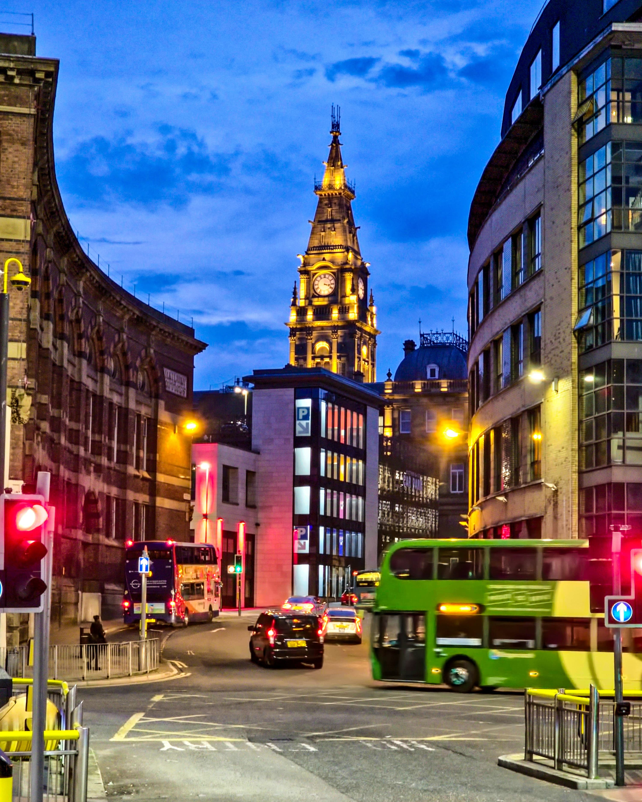
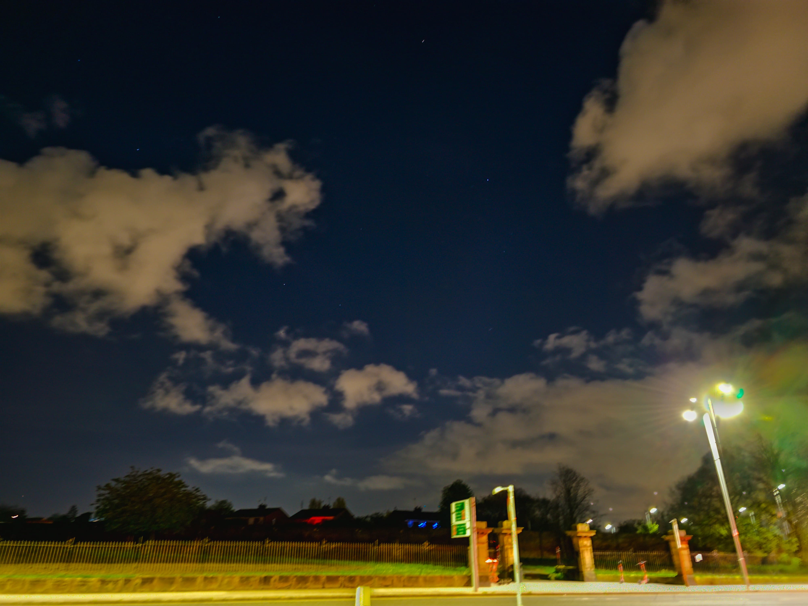

Daisies bloom under city lamps — a quiet blue hour near the museum.

A sky like a Van Gogh — unraveling above a quiet street in Liverpool.
One of Gormley's silent watchers stands tall as golden dusk meets a distant storm.
Swan at Crosby Marine Lake

Crescent Moon in High Detail
Stone trail along Crosby Beach

Evening city rhythm near the clocktower, Liverpool

Twilight over dune sands and moonrise

Twilight over tall grass

Church spire and cathedral in Liverpool, daytime

Liverpool at night under city lights

Night sky with clouds, Liverpool

The Wedding House, Liverpool

Ceiling inside Liverpool Cathedral
Pumphouse at Albert Dock, Liverpool

Victorian Clock Tower, Liverpool

Church Street, Liverpool
Sunset Glow, Green Park, London
Traffic in Golden Hour, Liverpool

Blossoms by the Path, Liverpool
Rainbow Over the Streets of Liverpool